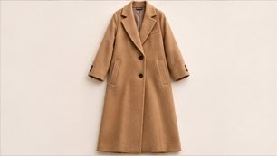
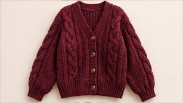

今日のゴール：先に出す物を決める「いつ使う物か」を考えると、出品の順番が決めやすくなります。
冬物もクリスマス雑貨も見つかったら、使う日が近いクリスマス雑貨から。発送までの日数と配送にかかる時間も考えて準備しましょう。
掲載順は売上ランキングではありません。過去の取引・検索傾向を参考にした候補です。2026年12月の販売結果を保証するものではありません。
01 冬に取引が増えた3品目
メルカリの公表では、以下3品目の取引数は2024年9〜10月より11〜12月に増加。12月単月の集計ではありません。
取引数の比較ありダウンジャケット
冬の防寒着として、手元にあればまず確認したい1点。襟と袖口の汚れをよく見ましょう。
確認ポイント・撮影箇所
出品前に、ここをチェック- 襟・袖口に汚れはある？
- 品質表示タグは読める？
- 取り外せるフードはそろっている？
写真に残そう
全体 ／ 襟・袖口 ／ 品質表示タグ
出すタイミング：冬に着られるうちに。梱包後の厚みと送料も先に確認。
取引数の比較ありムートンブーツ
冬用の靴は、見た目だけでなく靴底とかかとの減りも伝えたいところ。
確認ポイント・撮影箇所
出品前に、ここをチェック- 左右のかかとの減りに差はある？
- 内側に汚れや毛のつぶれはある？
- サイズ表記と素材は確認できる？
写真に残そう
左右の全体 ／ 靴底 ／ 内側 ／ 後ろからのかかと
出すタイミング：手元にあれば12月の出品候補へ。防水性など未確認の性能は書かない。
取引数の比較あり未使用のルームソックス
寒い季節の室内用に。家で使わない未使用品があれば確認しましょう。
確認ポイント・撮影箇所
出品前に、ここをチェック- 本当に未使用？ 保管中の汚れは？
- サイズと素材が分かる？
- 何足セットか明確？
写真に残そう
全体 ／ サイズ・素材表示 ／ 未使用タグや外袋
出すタイミング：冬のうちに。低価格の物は送料と資材代を引いた残額も確認。
02 クリスマス前に見ておきたい物
メルカリShopsの2025年11月の人気検索語を参考に選びました。検索されることと、売れることは別です。
メルカリShopsの検索傾向クリスマスオーナメント
クリスマスまでに飾りたい物。使う時期が近いので、先に出品準備を。
確認ポイント・撮影箇所
出品前に、ここをチェック- 個数とサイズが分かる？
- 割れ・欠け・ひもの不足はない？
- 配送中に傷まない保護ができる？
写真に残そう
全部を並べた写真 ／ 1個の大きさ ／ 掛けひも ／ 傷
出すタイミング：12月前半から優先して準備。購入者が飾れる日数も考える。
メルカリShopsの検索傾向クリスマスリース
玄関や室内に飾る季節の物。直径と裏の取り付け部分が分かる写真を添えましょう。
確認ポイント・撮影箇所
出品前に、ここをチェック- 直径を測った？
- 飾りの取れ・色あせはない？
- 吊り下げる部分は使える？
写真に残そう
正面 ／ 裏側 ／ 吊り下げ部分 ／ 大きさ
出すタイミング：12月前半から優先。飾りがつぶれない梱包方法も確認。
03 家にあれば見ておきたい候補
冬の着用や趣味の需要を考えた追加候補です。この3品目は、12月の取引増加を示す個別数値は掲載していません。

季節から考えた追加候補冬のコート
今年着ていないコートは候補に。買う人が気になるのはサイズ感と重さ・厚みです。
確認ポイント・撮影箇所
出品前に、ここをチェック- 着丈・身幅を測れた？
- 裏地や袖口に傷みはない？
- ベルトなど付属品はそろっている？
写真に残そう
前後の全体 ／ タグ ／ 袖口・裏地 ／ 付属品
出すタイミング：冬の着用を考えて早めに。かさばるため梱包後サイズを確認。

季節から考えた追加候補ニット・カーディガン
毛玉の状態まで伝えると、使い込まれ方を判断しやすくなります。
確認ポイント・撮影箇所
出品前に、ここをチェック- 脇・袖に毛玉はある？
- 穴や糸の引きつれはない？
- 素材タグと着丈・身幅を確認した？
写真に残そう
前後の全体 ／ 編み目 ／ 毛玉などの箇所 ／ タグ
出すタイミング：12月の普段着として検討されるうちに。状態を確認して準備。
手元の物から考えた追加候補キャラクターグッズ
作品やキャラクターが好きな人に届くよう、正しい名前とグッズの種類を説明します。12月限定の需要とは限りません。
確認ポイント・撮影箇所
出品前に、ここをチェック- 作品名・キャラクター名は正確？
- パーツや付属品に欠けはない？
- 印字や裏側の状態を確認した？
写真に残そう
全体 ／ 裏側 ／ 付属品 ／ 傷や汚れ
出すタイミング：家にあれば候補へ。クリスマスに届くなど、確約できない案内はしない。
根拠・データの見方
取引比較：メルカリ公表（2025年11月19日）。対象は2024年9月1日〜10月31日と11月1日〜12月31日。増加率・販売価格は示していません。
メルカリの取引数比較検索：メルカリShops公表（2026年10月20日）の2025年11月人気検索語。個人出品の成約データとは異なります。同レポートにはAIによる予測も含まれますが、ここでは掲載された検索語のみ参照しています。
メルカリShops検索キーワードレポート